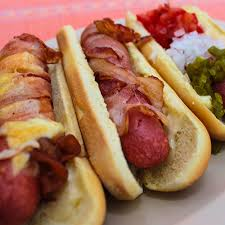

Inicio
Hot dog

Descripción
Los hot dogs son un platillo muy fácil de hacer; aquí te dejamos una variación de la receta que sabe mucho más rica que la tradicional.
Ingredientes
- 4 salchichas tipo Frankfurt
- 4 panes para hot dog
- 4 tiras de tocino
- 100 g de queso cheddar rallado
- 1/4 de cebolla picada
- 1 jitomate picado
- Salsa de tomate, mostaza y mayonesa, chile en vinagre o salsa picante
- 1 chorrito de aceite vegetal
Pasos
- Envuelve cada salchicha con una tira de tocino y asegúrala con un palillo.
- En un sartén coloca un chorrito de aceite vegetal y coloca las salchichas con tocino. Cocina hasta que el tocino quede listo.
- Luego baja el fuego y sobre las salchichas pon el queso rallado. Tapa el sartén y deja que el queso se derrita y retira de la lumbre.
- Abre los panes por la mitad sin separarlos completamente y tuéstalos ligeramente en una plancha o comal.
- Arma los hot dogs colocando una salchicha con tocino y queso sobre cada pan.
- Coloca una pequeña porción de jitomate y cebolla picada sobre el hot dog.
- Finalmente añade salsa de tomate, mostaza, mayonesa o chiles en vinagre, lo que más te guste para darle más sabor a tu platillo.